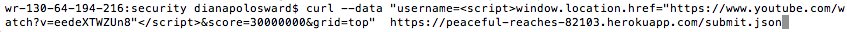

I was hired as a security consultant to document and resolve the security and privacy issues present in Jialu Wei's Assignment 3 (link to server), which is a modification of the popular game, 2048.
Initially I used curl command line injections to insert data into Jialu's database (i.e. a process of "black box" testing). To begin with, I simply inserted a new highest score (username=shaboyberries) and a new lowest score (username=me) score into the leaderboard by making POST requests. Then I tried running some scripts and deploying HTML forms, however I was unsuccessful. Finally I looked through Jialu's code to further analyze the presence of vulnerabilities and to try to pinpoint their locations.
Here is an example of a script injection I tried:

I found 3 security issues with Jialu's 2048 application:
In conclusion, there are several problematic security vulnerabilities present in Jialu's application. The first, its lack of rate limiting, would be much more worrisome if this was an app that stored sensitive personal data, since rate limiting is a primary defense against private account hacking.